35/35 số khớp. Kiểm tra ngày 24/10/2026 bằng trình duyệt Chrome điều khiển tự động (Playwright). Cách làm: mở từng báo cáo 10-K, tìm đúng trang theo chân trang “FORM 10-K số trang”, rồi đọc lại số trên trang đã hiển thị. Bốn tỷ lệ % đọc theo vị trí cột “% CHANGE EXCLUDING CURRENCY CHANGES” đầu tiên (bảng có hai cột cùng tên, cột thứ hai là của năm trước). Doanh số Digital đọc trong câu ngay sau cụm “Digital sales” (FY2020–2021: “Digital commerce sales”). Ô số và đoạn văn đã đọc được tô nền vàng, dòng tương ứng có viền đỏ.
Ảnh chụp từ bản sao 10-K trên NIKE Investor Relations, cùng số accession và cùng nội dung với bản trên SEC EDGAR (liên kết SEC ở từng năm).
| Chỉ tiêu | Trang | Số trong bộ dữ liệu | Đọc lại trên trang | Kết quả |
|---|---|---|---|---|
| % thay đổi doanh thu NIKE, Inc. loại trừ tỷ giá | 31 | −2% | −2% | Khớp |
| % thay đổi NIKE Brand loại trừ tỷ giá | 31 | −2% | −2% | Khớp |
| % thay đổi NIKE Direct loại trừ tỷ giá | 31 | +8% | +8% | Khớp |
| % thay đổi bán buôn loại trừ tỷ giá | 31 | −7% | −7% | Khớp |
| Doanh số NIKE Brand Digital (tỷ USD) | 32 | 5,5 | 5,5 | Khớp |
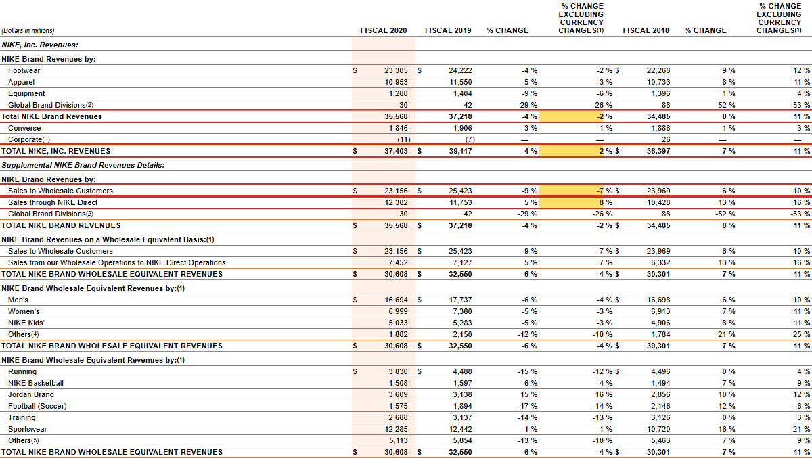
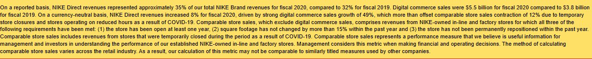
| Chỉ tiêu | Trang | Số trong bộ dữ liệu | Đọc lại trên trang | Kết quả |
|---|---|---|---|---|
| % thay đổi doanh thu NIKE, Inc. loại trừ tỷ giá | 32 | +17% | +17% | Khớp |
| % thay đổi NIKE Brand loại trừ tỷ giá | 32 | +17% | +17% | Khớp |
| % thay đổi NIKE Direct loại trừ tỷ giá | 32 | +30% | +30% | Khớp |
| % thay đổi bán buôn loại trừ tỷ giá | 32 | +10% | +10% | Khớp |
| Doanh số NIKE Brand Digital (tỷ USD) | 33 | 9,1 | 9,1 | Khớp |
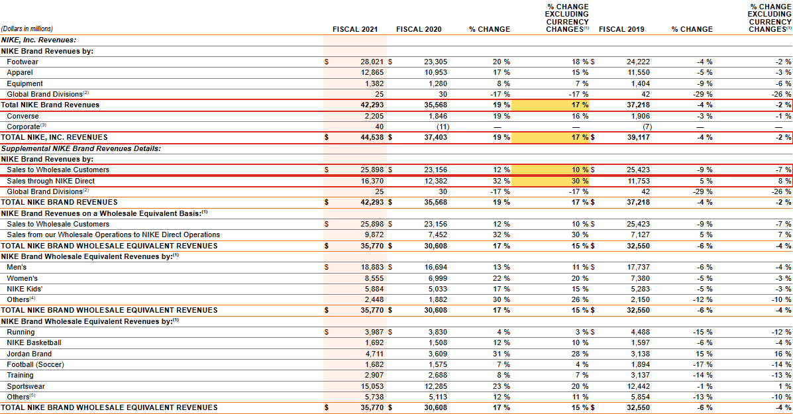
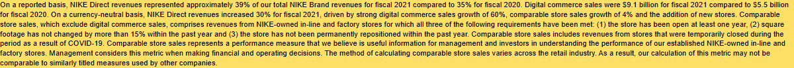
| Chỉ tiêu | Trang | Số trong bộ dữ liệu | Đọc lại trên trang | Kết quả |
|---|---|---|---|---|
| % thay đổi doanh thu NIKE, Inc. loại trừ tỷ giá | 32 | +6% | +6% | Khớp |
| % thay đổi NIKE Brand loại trừ tỷ giá | 32 | +6% | +6% | Khớp |
| % thay đổi NIKE Direct loại trừ tỷ giá | 32 | +15% | +15% | Khớp |
| % thay đổi bán buôn loại trừ tỷ giá | 32 | −1% | −1% | Khớp |
| Doanh số NIKE Brand Digital (tỷ USD) | 33 | 10,7 | 10,7 | Khớp |
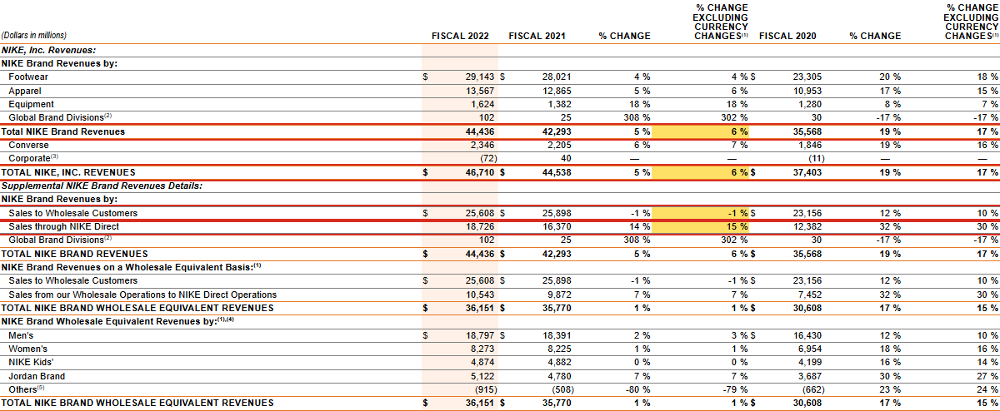
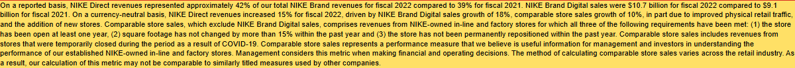
| Chỉ tiêu | Trang | Số trong bộ dữ liệu | Đọc lại trên trang | Kết quả |
|---|---|---|---|---|
| % thay đổi doanh thu NIKE, Inc. loại trừ tỷ giá | 32 | +16% | +16% | Khớp |
| % thay đổi NIKE Brand loại trừ tỷ giá | 32 | +16% | +16% | Khớp |
| % thay đổi NIKE Direct loại trừ tỷ giá | 32 | +20% | +20% | Khớp |
| % thay đổi bán buôn loại trừ tỷ giá | 32 | +14% | +14% | Khớp |
| Doanh số NIKE Brand Digital (tỷ USD) | 33 | 12,6 | 12,6 | Khớp |
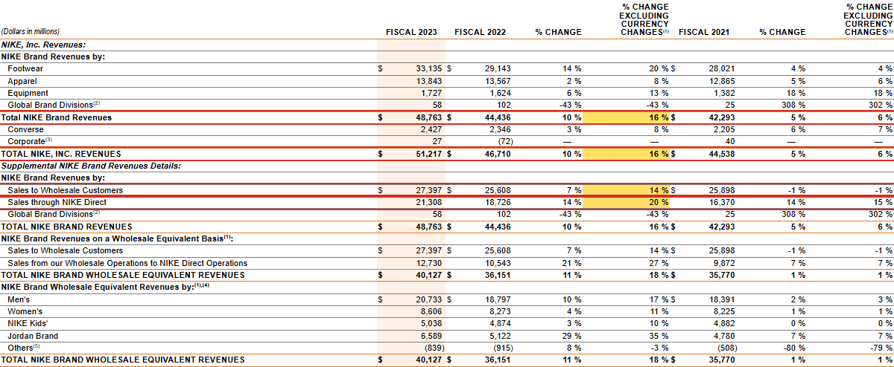
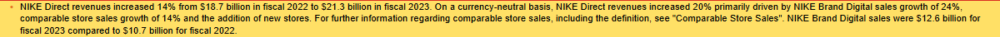
| Chỉ tiêu | Trang | Số trong bộ dữ liệu | Đọc lại trên trang | Kết quả |
|---|---|---|---|---|
| % thay đổi doanh thu NIKE, Inc. loại trừ tỷ giá | 34 | +1% | +1% | Khớp |
| % thay đổi NIKE Brand loại trừ tỷ giá | 34 | +1% | +1% | Khớp |
| % thay đổi NIKE Direct loại trừ tỷ giá | 34 | +1% | +1% | Khớp |
| % thay đổi bán buôn loại trừ tỷ giá | 34 | +2% | +2% | Khớp |
| Doanh số NIKE Brand Digital (tỷ USD) | 35 | 12,1 | 12,1 | Khớp |
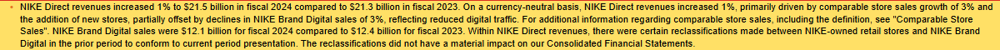
| Chỉ tiêu | Trang | Số trong bộ dữ liệu | Đọc lại trên trang | Kết quả |
|---|---|---|---|---|
| % thay đổi doanh thu NIKE, Inc. loại trừ tỷ giá | 33 | −9% | −9% | Khớp |
| % thay đổi NIKE Brand loại trừ tỷ giá | 33 | −9% | −9% | Khớp |
| % thay đổi NIKE Direct loại trừ tỷ giá | 33 | −12% | −12% | Khớp |
| % thay đổi bán buôn loại trừ tỷ giá | 33 | −6% | −6% | Khớp |
| Doanh số NIKE Brand Digital (tỷ USD) | 34 | 9,6 | 9,6 | Khớp |
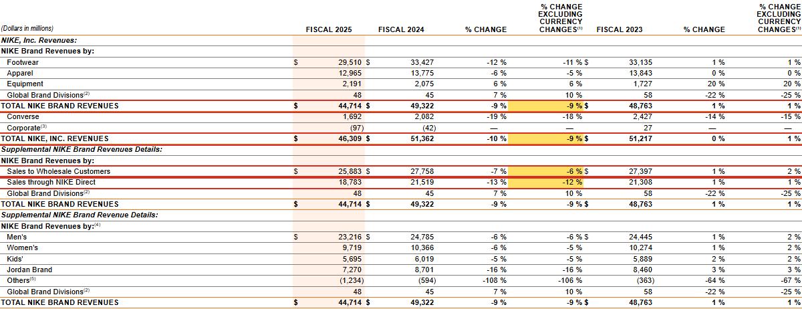
| Chỉ tiêu | Trang | Số trong bộ dữ liệu | Đọc lại trên trang | Kết quả |
|---|---|---|---|---|
| % thay đổi doanh thu NIKE, Inc. loại trừ tỷ giá | 32 | −2% | −2% | Khớp |
| % thay đổi NIKE Brand loại trừ tỷ giá | 32 | −1% | −1% | Khớp |
| % thay đổi NIKE Direct loại trừ tỷ giá | 32 | −8% | −8% | Khớp |
| % thay đổi bán buôn loại trừ tỷ giá | 32 | +4% | +4% | Khớp |
| Doanh số NIKE Brand Digital (tỷ USD) | 33 | 8,6 | 8,6 | Khớp |
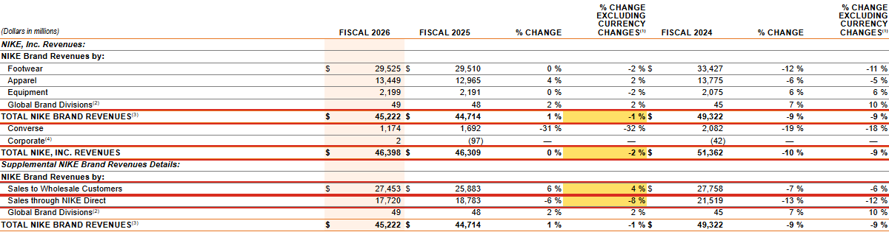